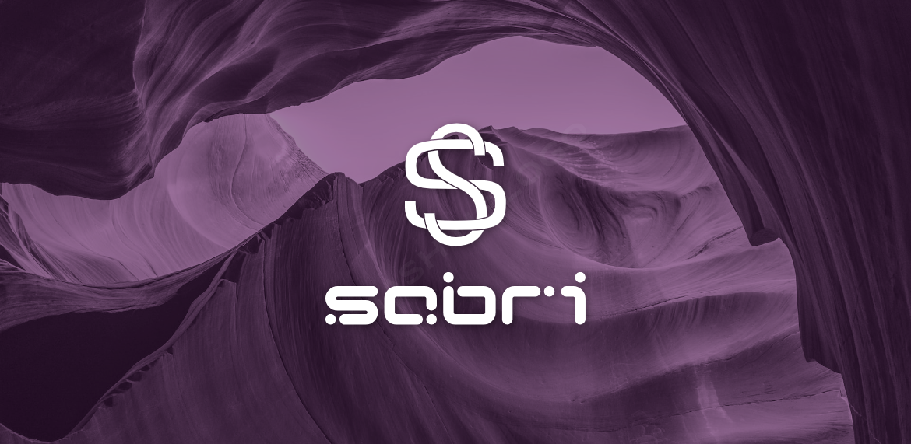

ABOUT ME
Originaire de Sidi Bouzid en Tunisie, je suis un étudiant né le 31 août 2001. Ma vie est une harmonie entre mes études, ma passion pour le breakdance, le montage vidéo et le football. Le breakdance me permet de m'exprimer physiquement et émotionnellement, tandis que le montage vidéo est mon terrain créatif, fusionnant images et sons pour raconter des histoires captivantes. Le football, quant à lui, reste le battement de mon cœur, que ce soit en soutenant mon équipe favorite ou en jouant sur le terrain.